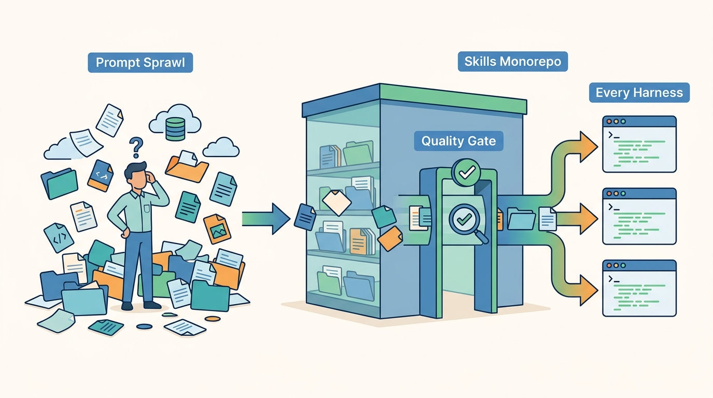

Part II — GATEWAYS: Agnostic Building Blocks
Skills as a Product: The Agent Skills Monorepo

Image generated by Google Gemini (gemini-3-pro-image-preview)
Part II — GATEWAYS: Agnostic Building Blocks

Image generated by Google Gemini (gemini-3-pro-image-preview)